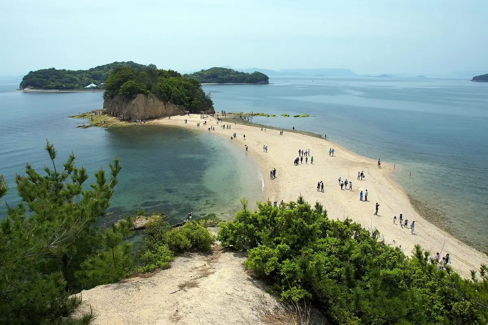
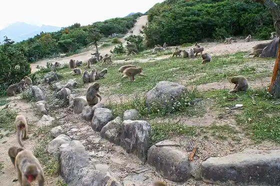
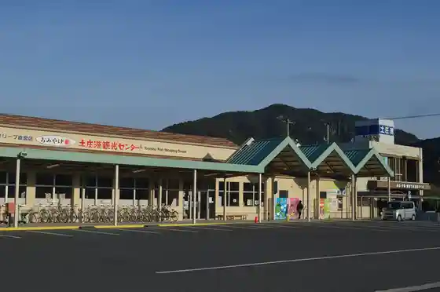
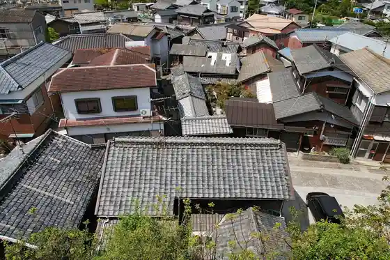
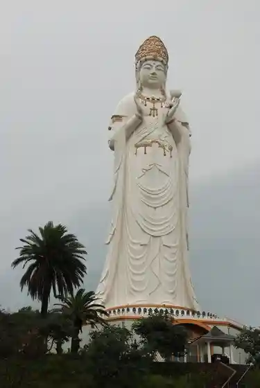

Tonosho
Tonosho · Kagawa
Tonosho
Highlighted on the Kagawa map.

Stay
Shozushima Onsen Oribian Shozushima Yuhigaoka Hotel
Shozushima Onsen Tenku no Oshambyu Hotel Umi Ro
Shozushima Bijinesu Hotel Nyupoto
Shozushima Onsen “ Seto no O Yu ” Hotel Nyu Umikaze
Kantoriiin Za Howaitomariin
Penshon Sansettokosuto
Shozushima Kokusai Hotel
Shozushima Oashisu
Umibe no Yado Irifune
Yoshihisa Ie Ryokan
Hotel Guriin Plaza Shozushima
Hitori Ryoshuku Sainutsu no
Dining
Shima Katsu
Bettei Gin Shiro
Pittsua Kamosu
Shozushima Ramen HISHIO Shozushima Enjierurodo Mise
Te Nobe Men O Shokuji Tokoro Gin Shiro
Izakaya Nangoku
Aji Sai
Oashisu
Rai Ie
Omine no Udon Ya San
Horai Ken
Umi no Resutoran
Umi Ashi
Honkaku Chugokuryori Kinka
Nagisa
Ryori Geijutsu
Onsen
Shozushima Onsen Oribian Shozushima Yuhigaoka Hotel Tenku no Rotemburo
Shozushima Onsen Tenku no Oshambyu Hotel Umi Ro Rotemburo
Shozushima Onsen “ Seto no O Yu ” Hotel Nyu Umikaze Seto no O Yu
Shozushima Kokusai Hotel Oriibu Baths
Hotel Guriin Plaza Shozushima Public Bath
Experience
Choshi Kei Shizen Zoo O Saru no Kuni
Sights
Enjierurodo
Choshi Kei

Tonosho Minato

Meiro no Machi

Shozushima Dai Kannon

Osaka Shiro Zan Ishi Memorial Park